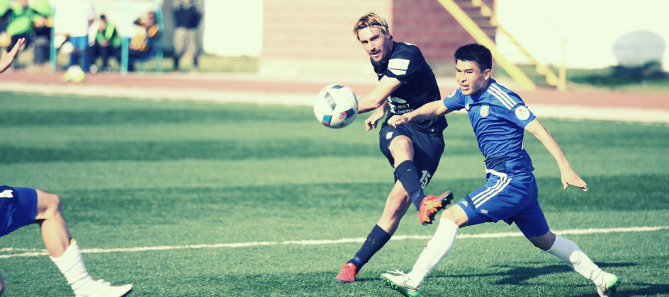

В каких случаях "Кайрат" может стать чемпионом Казахстана-2016
"Кайрат" сохраняет теоретические шансы на победу в национальном чемпионате. Для этого алматинцам нужно выиграть в оставшихся двух турах и надеяться на осечки лидирующей в таблице "Астаны".
До завершения чемпионата Казахстана осталось два тура. Однако "Астана" проведет три игры с учетом перенесенного матча в рамках 25-го тура с "Окжетпесом". На сегодняшний день астанчане на три очка опережают идущих в таблице на втором месте алматинцев. Следовательно, если команды одержат победы в 31-м туре, чемпион по-прежнему не определится. Трехочковое отставание "Кайрата" от первого места сохранится. Поэтому все может решиться в заключительном 32-м туре, в котором "Астане" достаточно будет сыграть вничью, или же ранее в перенесенном матче 25-го тура с синегорцами.
Для чемпионства "Астане" в оставшихся играх нужно набрать четыре очка. Если же она наберет менее трех очков (две ничьи/поражение или три поражения подряд), то золотые медали достанутся "Кайрату", но при условии, что алматинцы свои игры выиграют.
Если равенство очков было бы у более двух команд, претендующих на первое место, тогда бы учитывались результаты игр между собой (число очков, число побед, разность забитых и пропущенных мячей, число забитых мячей, число мячей, забитых на чужом поле); лучшая разность забитых и пропущенных мячей во всех матчах; наибольшее число побед во всех матчах; наибольшее число забитых мячей во всех матчах; наибольшее число мячей, забитых на чужих полях во всех матчах.
В 31-м туре (23 октября) "Астана" на своем поле примет "Актобе", а "Кайрат" отправится в гости к "Иртышу". 26 октября "Астана" на выезде проведет перенесенный матч 25-го тура с "Окжетпесом". В 32-м туре (29 октября) "Астана" также на выезде сыграет с "Иртышом", а "Кайрат" дома встретится с "Окжетпесом". С турнирным положением клубов можно ознакомиться здесь.
Если равенство очков было бы у более двух команд, претендующих на первое место, тогда бы учитывались результаты игр между собой (число очков, число побед, разность забитых и пропущенных мячей, число забитых мячей, число мячей, забитых на чужом поле); лучшая разность забитых и пропущенных мячей во всех матчах; наибольшее число побед во всех матчах; наибольшее число забитых мячей во всех матчах; наибольшее число мячей, забитых на чужих полях во всех матчах.
В 31-м туре (23 октября) "Астана" на своем поле примет "Актобе", а "Кайрат" отправится в гости к "Иртышу". 26 октября "Астана" на выезде проведет перенесенный матч 25-го тура с "Окжетпесом". В 32-м туре (29 октября) "Астана" также на выезде сыграет с "Иртышом", а "Кайрат" дома встретится с "Окжетпесом". С турнирным положением клубов можно ознакомиться здесь.
С расписанием начала матчей чемпионата Казахстана по футболу, а также с другими новостями о КПЛ и первой лиге можно ознакомиться на сайте ПФЛК.